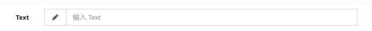
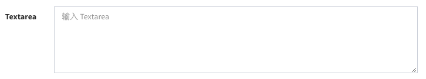
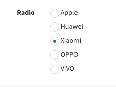
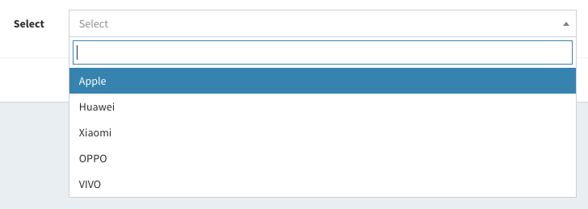
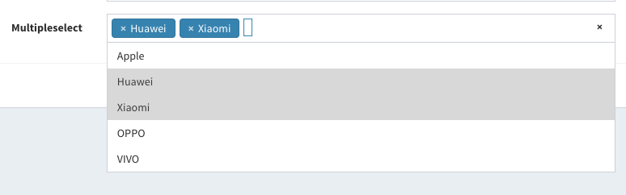
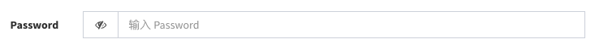
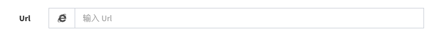
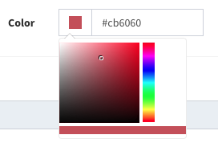
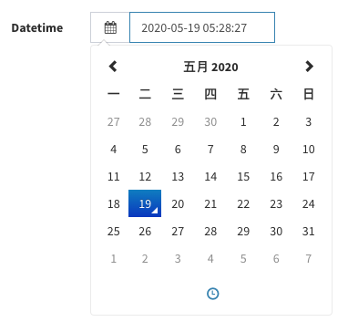
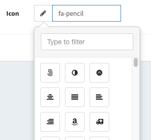

表单组件
在model-form中内置了大量的form组件来帮助你快速的构建form表单
基础方法
设置保存值
$form->text('title')->value('text...');设置默认值
$form->text('title')->default('text...');设置help信息
$form->text('title')->help('help...');设置属性
$form->text('title')->attribute(['data-title' => 'title...']);
$form->text('title')->attribute('data-title', 'title...');设置placeholder
$form->text('title')->placeholder('请输入。。。');设置必填
$form->text('title')->required();设置pattern
$form->text('title')->pattern('[A-z]{3}');设置readonly
$form->text('title')->readonly();设置disable
$form->text('title')->disable();设置autofocus
$form->text('title')->autofocus();标签页表单
如果表单元素太多,会导致form页面太长, 这种情况下可以使用tab来分隔form:
$form->tab('Basic info', function ($form) {
$form->text('username');
$form->email('email');
})->tab('Profile', function ($form) {
$form->image('avatar');
$form->text('address');
$form->mobile('phone');
})->tab('Jobs', function ($form) {
$form->hasMany('jobs', function ($form) {
$form->text('company');
$form->date('start_date');
$form->date('end_date');
});
});设置表单项组合
用来将表单项分组显示
$form->fieldset('用户信息', function (Form $form) {
$form->text('username');
$form->email('email');
});文本输入

$form->text($column, [$label]);
// 添加提交验证规则
$form->text($column, [$label])->rules('required|min:10');
// 设置FontAwesome图标
$form->text($column, [$label])->icon('fa-pencil');
// 设置datalist
$form->text($column, [$label])->datalist(['key' => 'value']);
// 设置inputmask, see https://github.com/RobinHerbots/Inputmask
$form->text('code')->inputmask(['mask' => '99-9999999']);Textarea 输入

$form->textarea($column[, $label])->rows(10);Radio选择

$form->radio($column[, $label])->options(['m' => 'Female', 'f'=> 'Male'])->default('m');
// 竖排
$form->radio($column[, $label])->options(['m' => 'Female', 'f'=> 'Male'])->stacked();Radio组件有两个派生组件RadioButton和RadioCard, 以单选按钮和单选卡片的形式显示，使用方式和Radio组件完全一致：
$form->radioButton($column[, $label])->options(['m' => 'Female', 'f'=> 'Male'])->default('m');
$form->radioCard($column[, $label])->options(['m' => 'Female', 'f'=> 'Male'])->default('m');Checkbox选择

checkbox能处理两种数据存储情况，参考多选
options()方法用来设置选择项:
$form->checkbox($column[, $label])->options([1 => 'foo', 2 => 'bar', 'val' => 'Option name']);
// 竖排
$form->checkbox($column[, $label])->options([1 => 'foo', 2 => 'bar', 'val' => 'Option name'])->stacked();
// 通过闭包设置options
$form->checkbox($column[, $label])->options(function () {
return [1 => 'foo', 2 => 'bar', 'val' => 'Option name'];
});
// 如果选项太多的话，可以在上面增加一个全选checkbox
$form->checkbox($column[, $label])->options([])->canCheckAll();Checkbox组件有两个派生组件CheckboxButton和CheckboxCard, 以多选按钮和多选卡片的形式显示，使用方式和Checkbox组件完全一致：
$form->checkboxButton($column[, $label])->options([1 => 'foo', 2 => 'bar', 'val' => 'Option name']);
$form->checkboxCard($column[, $label])->options([1 => 'foo', 2 => 'bar', 'val' => 'Option name']);Select单选

$form->select($column[, $label])->options([1 => 'foo', 2 => 'bar', 'val' => 'Option name']);或者从api中获取选项列表：
$form->select($column[, $label])->options('/api/users');其中api接口的格式必须为下面格式：
[
{
"id": 9,
"text": "xxx"
},
{
"id": 21,
"text": "xxx"
},
...
]如果选项过多，可通过ajax方式动态分页载入选项：
$form->select('user_id')->options(function ($id) {
$user = User::find($id);
if ($user) {
return [$user->id => $user->name];
}
})->ajax('/admin/api/users');API /admin/api/users接口的代码：
public function users(Request $request)
{
$q = $request->get('q');
return User::where('name', 'like', "%$q%")->paginate(null, ['id', 'name as text']);
}
接口返回的数据结构为
{
"total": 4,
"per_page": 15,
"current_page": 1,
"last_page": 1,
"next_page_url": null,
"prev_page_url": null,
"from": 1,
"to": 3,
"data": [
{
"id": 9,
"text": "xxx"
},
{
"id": 21,
"text": "xxx"
},
{
"id": 42,
"text": "xxx"
},
{
"id": 48,
"text": "xxx"
}
]
}Select 联动
select组件支持父子关系的单向联动：
$form->select('province')->options(...)->load('city', '/api/city');
$form->select('city');
其中load('city', '/api/city');的意思是，在当前select的选项切换之后，会把当前选项的值通过参数q, 调用接口/api/city，并把api返回的数据填充为city选择的选项，其中api/api/city返回的数据格式必须符合:
[
{
"id": 9,
"text": "xxx"
},
{
"id": 21,
"text": "xxx"
},
...
]控制器action的代码示例如下：
public function city(Request $request)
{
$provinceId = $request->get('q');
return ChinaArea::city()->where('parent_id', $provinceId)->get(['id', DB::raw('name as text')]);
}Select多选

$form->multipleSelect($column[, $label])->options([1 => 'foo', 2 => 'bar', 'val' => 'Option name']);多选可以处理两种情况，第一种是ManyToMany的关系。
class Post extends Models
{
public function tags()
{
return $this->belongsToMany(Tag::class);
}
}
$form->multipleSelect('tags')->options(Tag::all()->pluck('name', 'id'));第二种是将选项数组存储到单字段中，如果字段是字符串类型，那就需要在模型里面为该字段定义访问器和修改器来存储和读取了。
比如字段tags以字符串的形式存储，并且以逗号,分隔，那么像下面一样定义它的访问器和修改器：
class Post extends Model
{
public function getTagsAttribute($value)
{
return explode(',', $value);
}
public function setTagsAttribute($value)
{
$this->attributes['tags'] = implode(',', $value);
}
}如果选项过多，可通过ajax方式动态分页载入选项：
$form->multipleSelect('friends')->options(function ($ids) {
return User::find($ids)->pluck('name', 'id');
})->ajax('/admin/api/users');API /admin/api/users接口的代码：
public function users(Request $request)
{
$q = $request->get('q');
return User::where('name', 'like', "%$q%")->paginate(null, ['id', 'name as text']);
}接口返回的数据结构为
{
"total": 4,
"per_page": 15,
"current_page": 1,
"last_page": 1,
"next_page_url": null,
"prev_page_url": null,
"from": 1,
"to": 3,
"data": [
{
"id": 9,
"text": "xxx"
},
{
"id": 21,
"text": "xxx"
},
{
"id": 42,
"text": "xxx"
},
{
"id": 48,
"text": "xxx"
}
]
}穿梭多选

使用方法和multipleSelect类似
$form->listbox($column[, $label])->options([1 => 'foo', 2 => 'bar', 'val' => 'Option name']);
// 设置高度
$form->listbox($column[, $label])->height(200);邮箱输入
$form->email($column[, $label]);密码输入

$form->password($column[, $label]);URL 输入

$form->url($column[, $label]);IP 输入

$form->ip($column[, $label]);电话号码输入

$form->mobile($column[, $label]);
// 自定义格式
$form->mobile($column[, $label])->options(['mask' => '999 9999 9999']);颜色选择

$form->color($column[, $label])->default('#ccc');时间输入
$form->time($column[, $label]);
// 设置时间格式，更多格式参考http://momentjs.com/docs/#/displaying/format/
$form->time($column[, $label])->format('HH:mm:ss');日期输入

$form->date($column[, $label]);
// 设置日期格式，更多格式参考http://momentjs.com/docs/#/displaying/format/
$form->date($column[, $label])->format('YYYY-MM-DD');日期时间输入
$form->datetime($column[, $label]);
// 设置日期格式，更多格式参考http://momentjs.com/docs/#/displaying/format/
$form->datetime($column[, $label])->format('YYYY-MM-DD HH:mm:ss');时间范围选择
$startTime、$endTime为开始和结束时间字段:
$form->timeRange($startTime, $endTime, 'Time Range');日期范围选
$startDate、$endDate为开始和结束日期字段:
$form->dateRange($startDate, $endDate, 'Date Range');时间日期范围选择
$startDateTime、$endDateTime为开始和结束时间日期:
$form->datetimeRange($startDateTime, $endDateTime, 'DateTime Range');货币输入
$form->currency($column[, $label]);
// 设置单位符号
$form->currency($column[, $label])->symbol('￥');
数字输入
$form->number($column[, $label]);
// 设置最大值
$form->number($column[, $label])->max(100);
// 设置最小值
$form->number($column[, $label])->min(10);比例输入
$form->rate($column[, $label]);滑动选择
可以用来数字类型字段的选择，比如年龄：
$form->slider($column[, $label])->options([
'max' => 100,
'min' => 1,
'step' => 1,
'postfix' => 'years old'
]);更多options请参考:https://github.com/IonDen/ion.rangeSlider#settings
富文本编辑
富文本编辑组件在v1.7.0版本之后移除，请选择使用下面的富文本编辑器扩展：
隐藏域
$form->hidden($column);开关
on和off对用开关的两个值1和0:
$states = [
'on' => ['value' => 1, 'text' => '打开', 'color' => 'success'],
'off' => ['value' => 0, 'text' => '关闭', 'color' => 'danger'],
];
$form->switch($column[, $label])->states($states);经纬度选择
地图组件在v1.7.0版本之后移除，请使用经纬度选择器插件代替
纯显示
只显示字段，不做任何操作：
$form->display($column[, $label]);
//更复杂的显示
$form->display($column[, $label])->with(function ($value) {
return "<img src="$value" />";
});分割线
$form->divider();
// OR
$form->divider('Title');HTML显示
插入html内容，参数可以是实现了Htmlable、Renderable或者实现了__toString()方法的类
$form->html('你的html内容'[, $label]);标签输入
插入逗号(,)隔开的字符串tags
$form->tags('keywords'[, $label]);图标选择

选择font-awesome图标
$form->icon('icon'[, $label]);时区选择
$form->timezone('timezone'[, $label]);